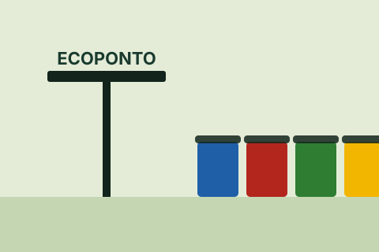
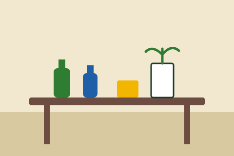
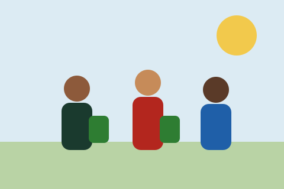
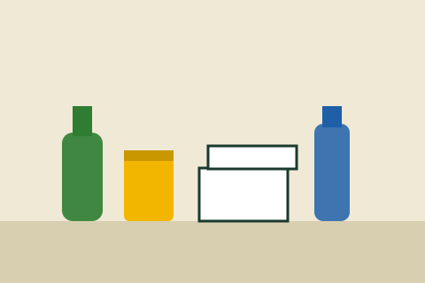

Galeria
Momentos das nossas ações
Confira registros das atividades do Reciclê Bairro.

Ponto de coletaEcoponto com contêineres separados por material. 
Oficina de reciclagemReaproveitamento de garrafas e embalagens. 
Mutirão de limpezaMoradores recolhendo resíduos no bairro. 
Materiais recicláveisVidro, metal, papel e plástico separados.